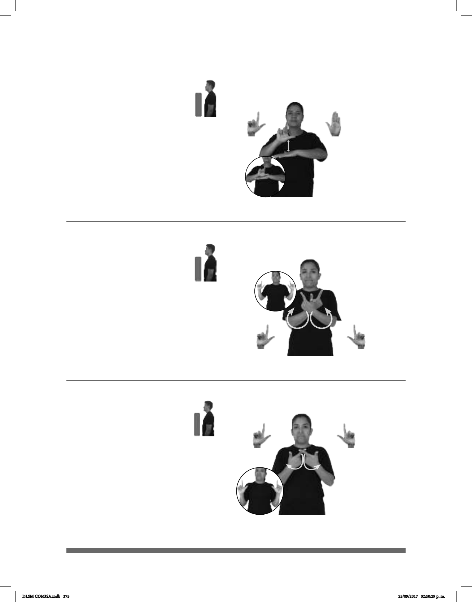

375
1
2
(A) (L-104)
Seña: SB
MD L.1, MB B-P.2
MD palma hacia
fuera. MB palma hacia abajo.
MD y MB a la altura
del pecho.
La MD golpea la MB
en línea recta repetidamente.
Es un país ubicado en
la costa oeste de África.
Seña: SS
L.1
Palmas hacia adentro.
Del pecho a los hombros, del centro a
los lados.
Los dedos índices inician cruzados y
luego las manos se abren hacia los lados.
Labios con las comisuras
hacia abajo.
1. adj. Que puede elegir o hacer algo
según su propio juicio, sus intereses, deseos, sin
depender del dominio, el poder o la autoridad de
otra persona, grupo, institución. 2. Sust. f. Estado
de quien puede actuar de esta manera o condición
de lo que no está sujeto o sometido a prohibiciones
ni restricciones.
Seña: SS
L.1
Las palmas inician hacia
adentro y terminan hacia fuera.
Del pecho a los hombros, del
centro a los lados.
Las manos inician cruzadas
y luego se abren hacia los lados.
1. adj. Que puede elegir o
hacer algo según su propio juicio, sus
intereses, deseos, sin depender del
dominio, el poder o la autoridad de otra
persona, grupo, institución. 2. Sust. f.
Estado de quien puede actuar de esta
manera o condición de lo que no está
sujeto o sometido a prohibiciones ni
restricciones.
1
2
(L-105)
(L-103)
LIBERIA
izquierda
PAIS POBRE
Liberia es un país pobre.
CÁRCEL
derecha
HOMBRE QUERER pos-SU LIBERTAD
El preso quiere su libertad.
CARCEL
derecha
HOMBRE QUERER pos-SU LIBERTAD
El preso quiere su libertad.
DLSM COMISA.indb 375 25/09/2017 02:50:29 p. m.